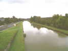
Première du nom, elle s'est tenue à la Ferme des Barreaux où est ouvert en temps normal (et en fête, d'ailleurs) un restaurant, sur la commune de Herry où habite Bernard-Noël Chagny... William Venant y a impulsé la participation des cervolistes. Comme d'hab, je fais un peu de tourisme dans cette jolie région, en longeant le canal latéral à la Loire, qui la traverse à Briare sur le pont-canal bien connu maintenant...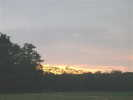
Le soleil se couche sur la savane berrichonne, mais la Ferme nous offre déjà le repas de ce soir, je suis encore le seul cervoliste...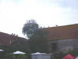
Un premier aperçu des animaux de la ferme, ces paons se sont perchés sur le faîtage, je ne savais pas que ça volait si bien !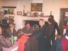
Evidemment, il y a aussi des clients "normaux" au restaurant. Et un invité surprise, PPDA vient animer la chose, animé lui-même par l'extrêmement sympathique Carole, de l'équipe des Guignols de l'Info !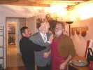
Chirac participe aussi aux débats et vient congratuler l'autre Jacques, le patron de l'affaire !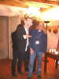
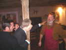
PPDA veut aussi serrer la main de Jacques, mais il ne se compromet pas comme ça ...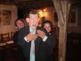
Carole et son copain animent la chose, Carole fait la tête (c'est fatigant !), les mouvements des yeux et la main gauche, le copain la main droite. Certaines marionnettes des Guignols demandent 4 personnes !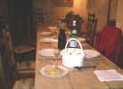
Pour finir, on nous sert un petit en-cas avec ce qu'il y a, sur la table de ferme ! La discussion est animée, en particulier par Jacques, préoccupé par l'Ame, le magnétisme et qui pose des questions de haute philosophie. Bon on va quand même se coucher vers minuit et demi, il faudra voler demain...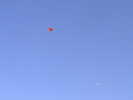
Samedi matin, François est arrivé, le vent est juste juste, mais on peut faire voler son Rokkaku et mon vieil Albatros, le plus léger...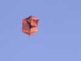
Mais le vent diminue et je retombe, François arrive à maintenir en vol, en restant autour de 250 m, son rokkaku tout neuf et qui vole super bien, !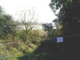
Parmi les possibilités offertes à la Ferme, observation des migrateurs sur les bancs de sable de la Loire. Ca rapporte même des points pour la Chasse au Trésor.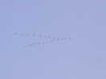
Justement, des migrateurs, en voilà, mais ils ne font que passer, des cormorans qui vont vers le Sud...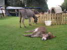
La cour de la Ferme n'est pas un désert boueux ou poussiéreux gratté par les poules, mais une splendide pelouse, où ce jeune ânon s'étend avec délices près de sa mère...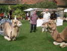
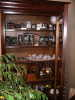
Au dîner, le restaurant est débordé, Bernard-Noël nous invite généreusement chez lui où plusieurs dormiront aussi. Sa collection d'appareils photos vaut le déplacement, en voici à peu près un tiers !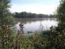
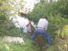
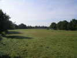
Heureusement, le splendide terrain est assez élevé pour rester intact...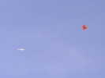
Le vent reste orienté ultra-light, je sors mon Harfang, mais François arrive encore à monter après 2 heures de pompage acharné son rokkaku à une hauteur viable...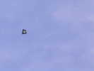
Marianne Venant fait voler un combattant de Dom, spi et bambou !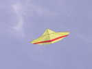
Sylvien, lui, arrive sans problème à monter son Jessica 14, le plus élancé...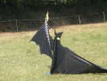
Mais le Batman de William, malgré plusieurs essais, restera en décoration statique, avachi sur ses bannières poissons...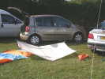
Bernard-Noël grée son grand rokkaku d'aéro-photo, mais il ne volera pas.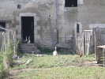
La ferme élève aussi des animaux classiques, comme des oies... et fabrique des foies gras qu'on peut déguster au restaurant...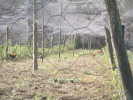
Il y a aussi des poules Cayenne, petites et très jolies, mais je n'ai pas vu les "poules de luxe" indiquées dans la notice...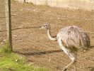
Plus rares, il y a aussi 2 nandous, sorte de petites autruches. Leurs plumes sont belles, mais longues et fines, pas duveteuses comme celles de leurs grandes soeurs...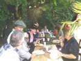
Après une matinée laborieuse malgré les résultats limités, déjeuner à la ferme. Les cervolistes se sont rassemblés ! Mais il y a aussi une dame qui fabrique des bijoux, et d'autres convives, c'est sympa...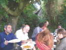
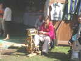
Dans la cour, une fileuse fabrique le fil avec lequel elle tissera châles, vestes, gilets, etc.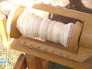
Le fil est enroulé et tordu sur le rouet classique...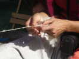
Pour obtenir un fil régulier, tout est dans le coup de main !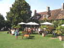
Dans la cour, la terrasse du restaurant est bigrement attirante, non ?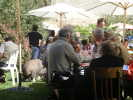
Mais entre les tables, on fait de drôles de rencontres comme madame Piggy !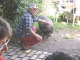
William, qui en a eu assez de peigner la girafe en attendant le déjeuner, peigne cette dame velue...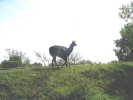
Retour vers le terrain de cerf-volant. On passe à côté du lama, curieux mais timide...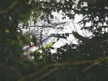
Le vent reste faiblard, William envoie son Dopéro au-delà des arbres, et là, il a une aile qui trempe à 5 m dans la Loire ! Le sauvetage est impossible, surtout avec le courant d'une Loire en crue !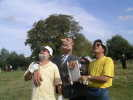
Ca vole un peu quand même, et notre ex-président profite de sa retraite pour venir s'initier à la chose...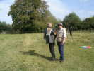
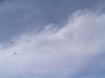
A droite du Jessica de Gilles et du Wolfgenki de William, il paraît que les petits points sont des busards, qui ont réinvesti les berges de la Loire dans ce coin, qui est une réserve naturelle...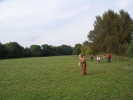
William a fait revoler son Dopéro (faut bien qu'il sèche !), et a l'air de pratiquer un Yoyo un peu spécial...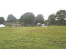
Finalement, grâce à la Course au Trésor, il y a pas mal de monde qui vient nous voir dans notre pré un peu lointain, et on se démène pour lui faire honneur !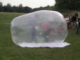
En démonstration, avec l'aide de Christophe, Bernard-Noël a gonflé le ballon qui lui sert (gonflé à l'hélium mais ça coûte 200 Euros...) pour ses campagnes archéologiques en Afrique ou en Asie, quand le vent est trop faible.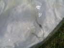
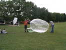
BN expose au public les modalités d'utilisation, la nacelle avec la télécommande et des images retransmises en temps réel par le moniteur...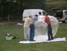
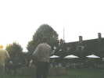
Pour terminer, il y a un petit show dans la cour. Pour nous manifester, nous rejoignons les lieux le CV à la main, en contournant laborieusement les arbres et les bâtiments. Le show fini, j'atterris mon Megoel (8 m) au milieu du public, qui se pousse gentiment. Suit le Jessica de Sylvien, puis celui de Gilles... Francois essaye de faire un peu de photo avec Christophe mais les accus sont vides et le vent faiblit...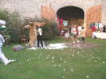
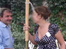
Nous avons enfin découvert qui était Jessica, cette muse qui inspire les cervolistes, mais il y a quelque chose qui ne colle pas, les Jessicas sont des cerfs-volants plats...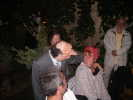